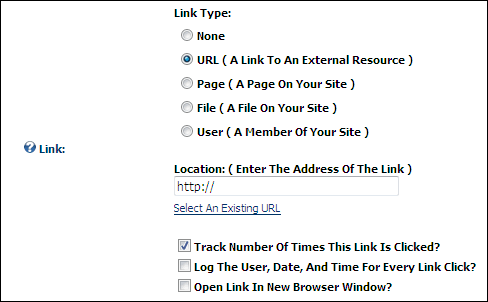

The Link Control allows Module and Page Editors to select a link to a URL, a page on this site, a file that has been uploaded to the Digital Asset Management module (Admin > File Management), or the profile of a registered user. The Link Control can also be used to disable a link field on a module, such as the Announcements module. The Link Control is displayed on the add and edit page of many modules including the Links, Announcement, Documents, Events, Media and Vendors module.
Optional Settings:

The Link Control as displayed on the Edit page of the Links module